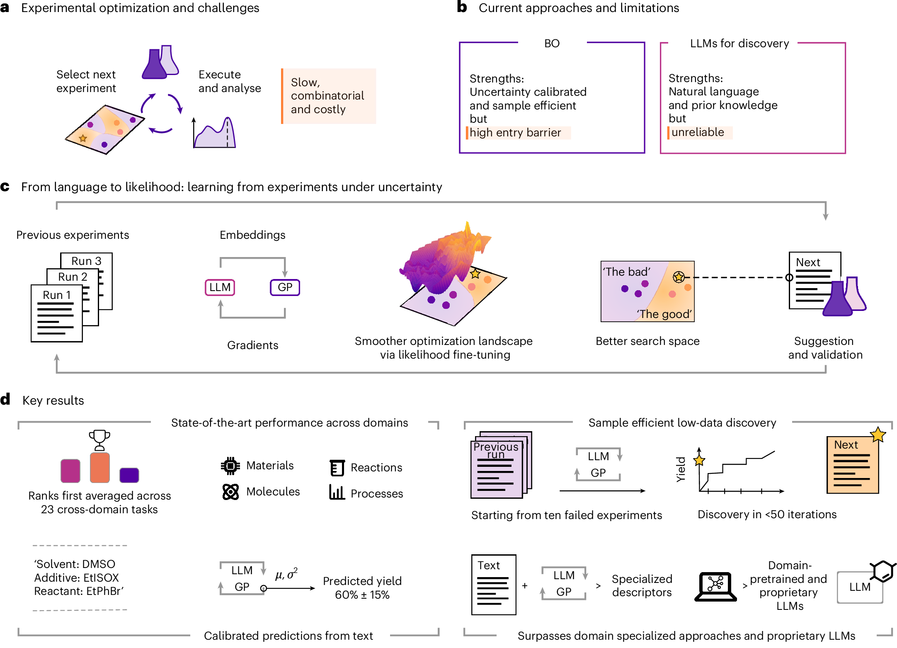
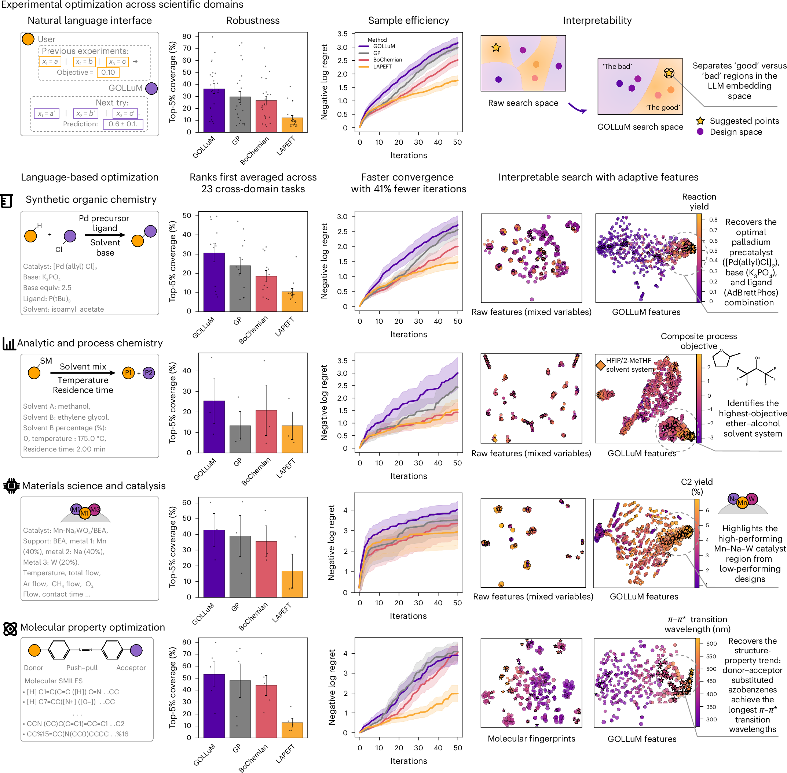
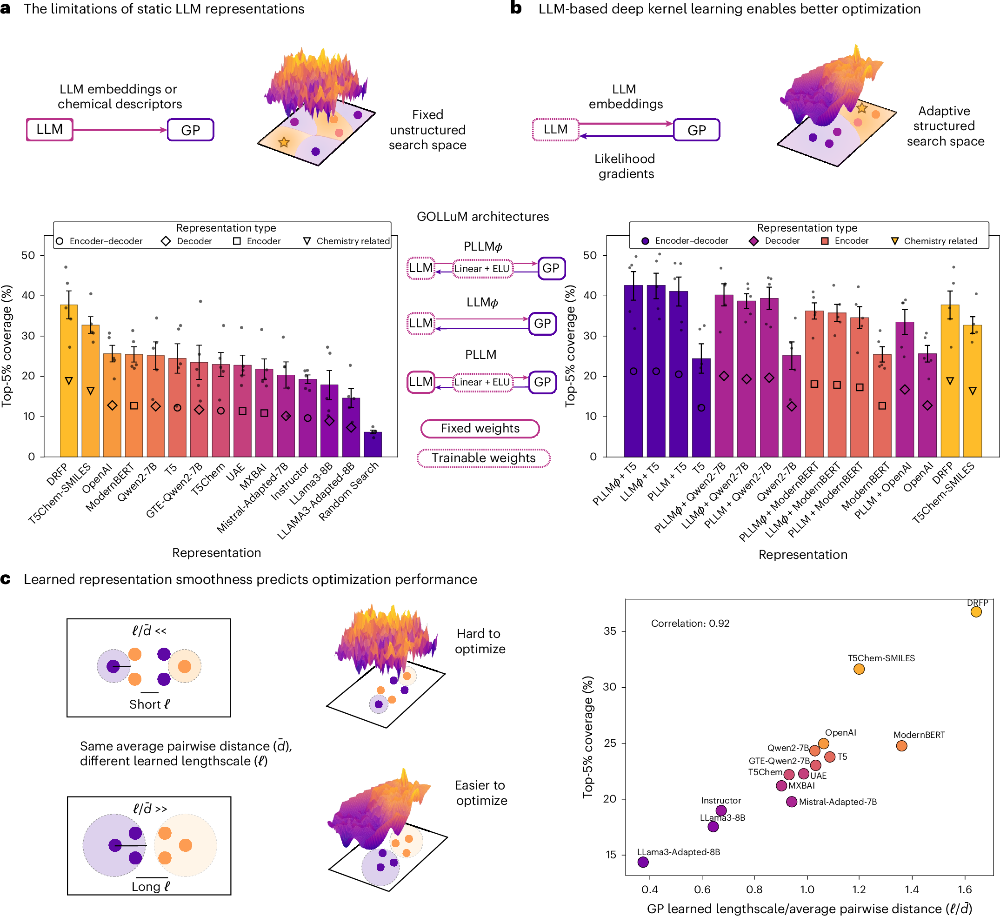
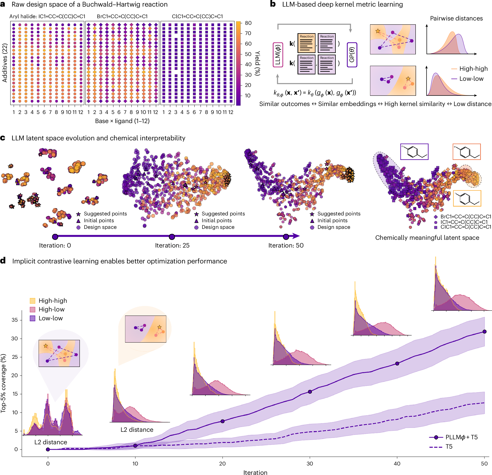
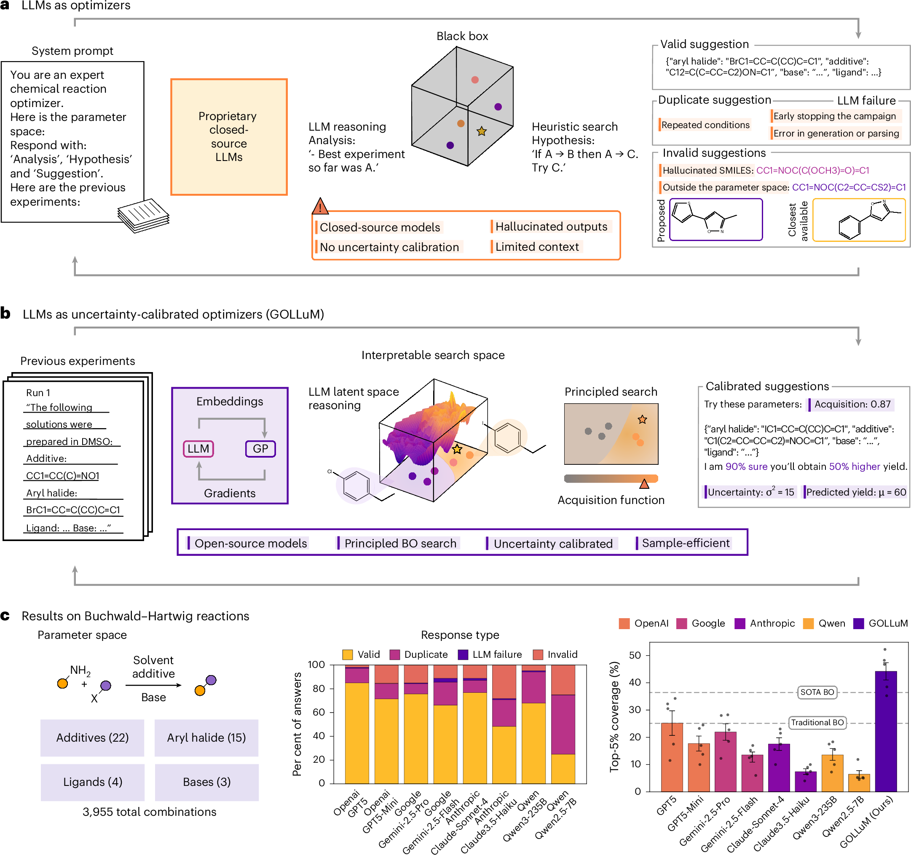

论文资料
Large language models as uncertainty-calibrated optimizers for experimental discovery
已取得公开摘要，图文解读尚未完成
已取得公开摘要，图文解读尚未完成。取得完整资料并通过核验后，这个地址会更新为图文解读。
公开摘要
From reaction optimization to molecular design, experimental discovery poses the same expensive question: which candidate to test next under time and resource constraints. Bayesian optimization provides principled answers but depends on domain expertise that rarely transfers. Large language models (LLMs) contain rich scientific knowledge but lack the calibrated uncertainty estimates crucial for high-stakes decisions. Here we show how training language models through Bayesian objectives enables their use as reliable optimizers guided by natural language. Our approach, GOLLuM (Gaussian process Optimized LLMs), teaches LLMs from experimental outcomes under uncertainty, transforming their overconfidence from a fundamental flaw into a precise learning signal. This signal reshapes the LLM embeddings so that experiments with similar outcomes cluster together, revealing structure in the design space. Starting from only ten low-performing experiments, GOLLuM generalizes across 23 tasks in organic synthesis, materials science, process chemistry and molecular design, ranking first on average among all competing methods. It matches traditional Bayesian optimization with over 40% fewer experiments and nearly doubles the discovery of high-performing Buchwald–Hartwig reactions over expert quantum-chemical descriptors and state-of-the-art LLMs (43% versus 24–25%). More broadly, GOLLuM points to a different paradigm for specializing foundation models: not through more data but through richer, uncertainty-guided information.
原图未改动。以下图注来自标注的来源，不据此补写摘要未报告的实验结论。
已取得的论文原图


原文图注与出处
a , Experimental optimization challenges. Scientists face the universal problem of efficiently exploring vast design spaces under time and cost constraints. b , Current approaches impose a trade-off between accessibility and reliability. BO provides principled uncertainty calibration and sample efficiency but requires domain expertise. LLMs offer natural language interfaces and prior knowledge but lack reliability. c , GOLLuM optimization loop. Previous experimental results, described in natural language, feed into joint optimization of both GP and LLM components. Likelihood gradients from the GP fine-tune the LLM, progressively smoothing the optimization landscape and organizing the search space into two distinct regions of high and low performance: the good and the bad, respectively. This structured representation enables easier selection for the next experiment, which becomes a new training point that continues the loop. d , Key results. GOLLuM ranks first averaged across 23 cross-domain tasks spanning materials, reactions, molecules and processes, enabling sample-efficient discovery from natural language inputs while surpassing specialized descriptors, domain-pretrained models and state-of-the-art LLMs.
Ranković, Bojana et al.
原文图页 · CC BY 4.0

原文图注与出处
GOLLuM unifies a GP surrogate with a language encoder trained through the GP marginal likelihood, enabling (1) robust optimization across 23 chemistry/materials tasks (top-5% coverage), (2) faster discovery under equal experimental budget (50 experiments; PLLM ϕ as main GOLLuM variant) and (3) interpretable organization of the design space where high-performing regions become separable. Rows show representative domains (synthetic organic chemistry, analytic/process chemistry, materials/catalysis and molecular property optimization). Sample-efficiency curves show the mean standardized negative log regret with 95% confidence intervals across 20 independent seeds per benchmark, starting from 10 initial observations. Bar charts display the mean top-5% coverage across the benchmarks in each domain; the overlaid dots show the per-benchmark means (one point per benchmark) and error bars the standard error of the mean across benchmarks. Interpretability panels show a two-dimensional t-distributed stochastic neighbour embedding projection of the LLM latent space, with points coloured by their objective value, ranging from low (dark/purple) to high (light/yellow) performance. All LLM-based methods use T5 57 as the encoder. Source data
Ranković, Bojana et al.
原文图页 · CC BY 4.0

原文图注与出处
a , BO performance with fixed LLM features as input to GP on Buchwald–Hartwig tasks. We show average discovery of high-impact regions of the design space as the percentage of the top-5% reactions found during the optimization, aggregated across all five Buchwald–Hartwig reactions. Chemistry-related representations include T5Chem-SMILES 53 , a pretrained chemistry-related LLM with SMILES input, and DRFP 51 , a reaction fingerprint. b , Comparative analysis of GP-based LLM fine-tuning. The fine-tuned models are arranged by the overall performance and relative improvements to their base (fixed embeddings) LLM-GP variants. Chemistry-related baselines (previous best) included for comparison. All results show mean and standard error across 20 independent seeds per model for all five Buchwald–Hartwig reactions, with each optimization run starting from 10 initial points (random below median) and selecting subsequent points via acquisition function maximization over the enumerated design space. Overlaid dots in a and b represent the per-Buchwald–Hartwig-reaction mean coverage. c , Data representations and their success rates in BO. BO performance correlates with GP smoothness, measured as the ratio of learned lengthscale to average pairwise embedding distance. Higher ratios indicate smoother GP fits, implying the representation supports meaningful generalization across the design space. Source data
Ranković, Bojana et al.
原文图页 · CC BY 4.0

原文图注与出处
a , The raw design space of one of the Buchwald–Hartwig reactions, showing reaction yields across different combinations of additives, bases and ligands for three different aryl halides (I, Br and Cl). b , A schematic of LLM-based deep kernel metric learning. The joint optimization of the LLM and GP encourages the model to learn embeddings where experiments with similar outcomes position close together in the latent space, resulting in high kernel similarity and low pairwise distance. c , The evolution of the LLM’s latent space during the optimization process, shown as a two-dimensional t-distributed stochastic neighbour embedding projection. Starting from an unstructured state (iteration 0), the space becomes progressively more organized (iteration 25), eventually forming a chemically meaningful map where reactions cluster based on key reactivity patterns and performance (iteration 50). d , The link between implicit contrastive learning and optimization performance. The main plot shows that the adaptive model (PLLM ϕ + T5) significantly outperforms the static model (T5); lines show the mean best-so-far across 20 independent seeds and shaded bands the standard error of the mean over seeds. The inset histograms show the distribution of pairwise L2 distances between high-yielding and low-yielding experiments at different iterations. As the optimization progresses, the model learns to separate high- and low-performing points, creating a more structured space that enables more efficient discovery. Source data
Ranković, Bojana et al.
原文图页 · CC BY 4.0已取得的论文原图


原文图注与出处
a , Querying LLMs for optimization. Given the parameter space and previous experiments, the LLM proposes next suggestions. This method relies on heuristic search and suffers from a lack of uncertainty calibration, which leads to invalid suggestions, hallucinations and frequent failures. b , GOLLuM framework integrates an LLM and a GP in a joint optimization loop. Gradients from the GP’s probabilistic objective fine-tune the LLM, creating an interpretable search space that enables principled, uncertainty-aware and sample-efficient optimization. c , Quantitative results on the Buchwald–Hartwig reactions benchmark. Left: the combinatorial design space of 3,955 reactions across five distinct chemical products, corresponding to ~800 unique conditions per product. Middle: response-type analysis across several state-of-the-art LLMs reveals high failure rates, with a large fraction of invalid or duplicated suggestions. Responses are categorized as valid, duplicate (repeated within a run), invalid (outside the parameter space, for example, hallucinated reactants) or LLM failure (unparsable output or timeout); the full querying protocol is given in the Supplementary Information section ‘LLMs as direct optimizers’. Right: a comparison of optimization performance (‘top-5% coverage’) shows that direct LLM approaches substantially underperform both traditional BO (with density functional theory descriptors 20 ) and state-of-the-art BO (with DRFP reaction fingerprints 51 ), as well as our proposed GOLLuM method using GP-fine-tuned general-purpose open-source LLMs (T5 57 ). Bars show the mean across the five Buchwald–Hartwig products; overlaid dots are the per-product mean coverages ( n = 5 products) and error bars the standard error of the mean over products. Source data
Ranković, Bojana et al.
原文图页 · CC BY 4.0